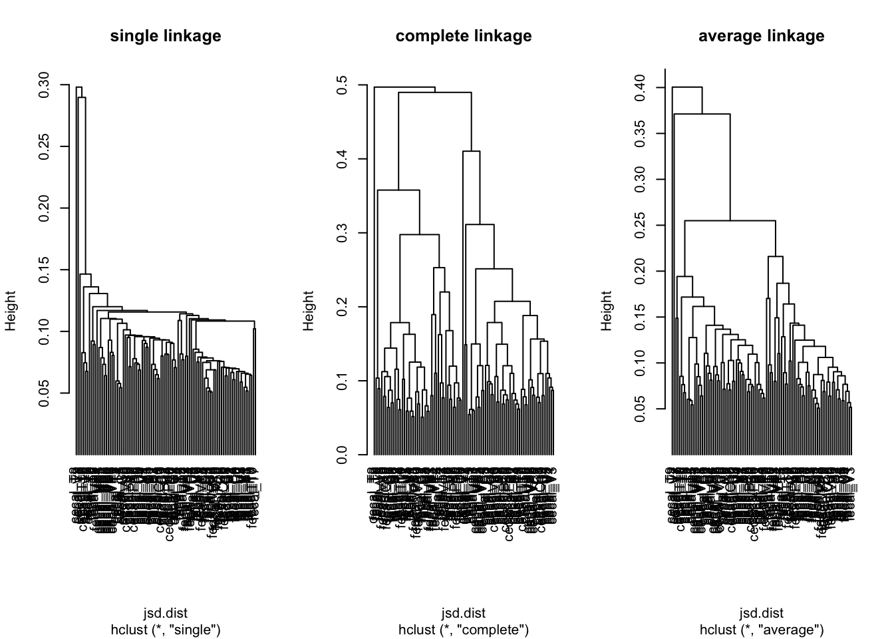
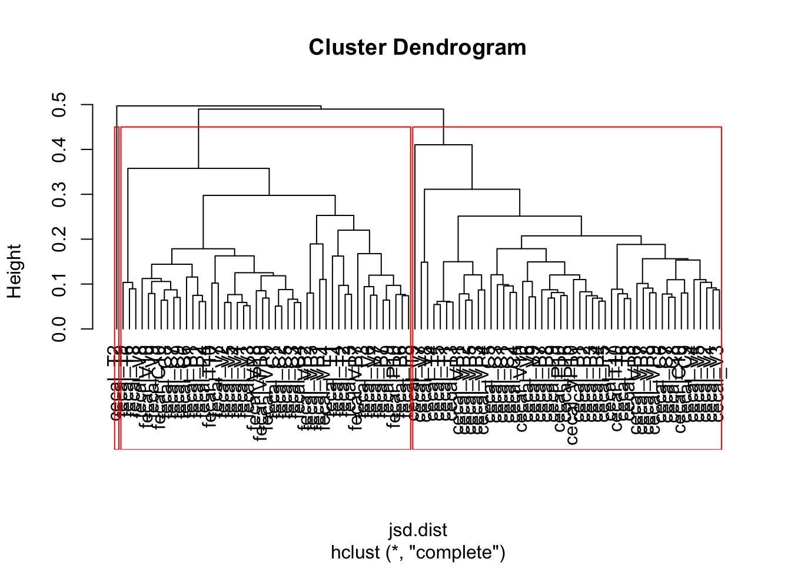
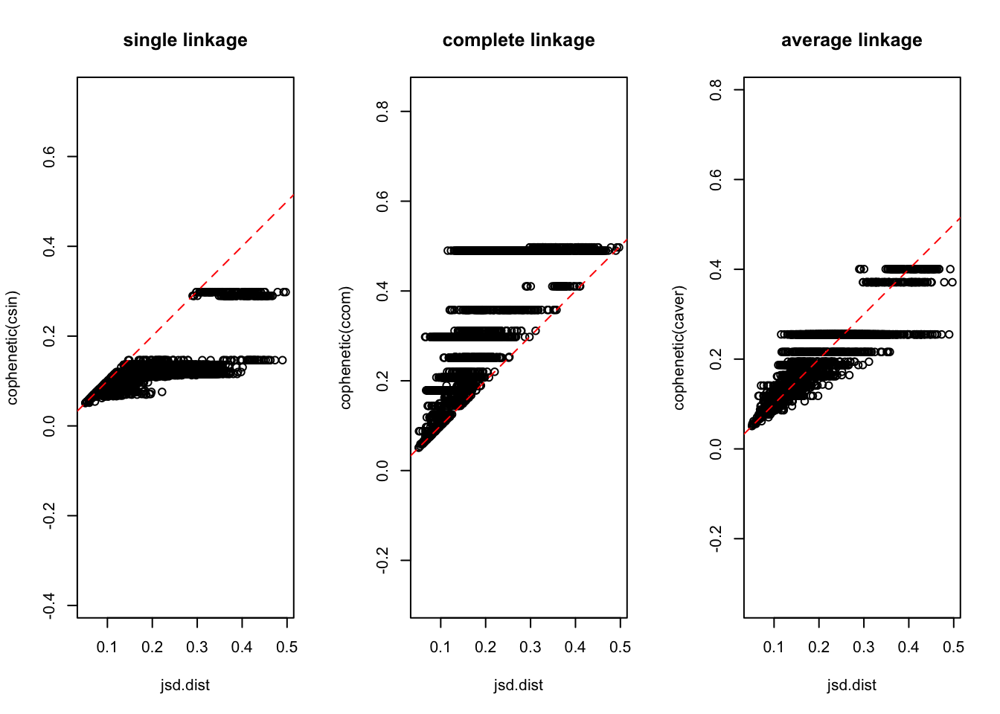
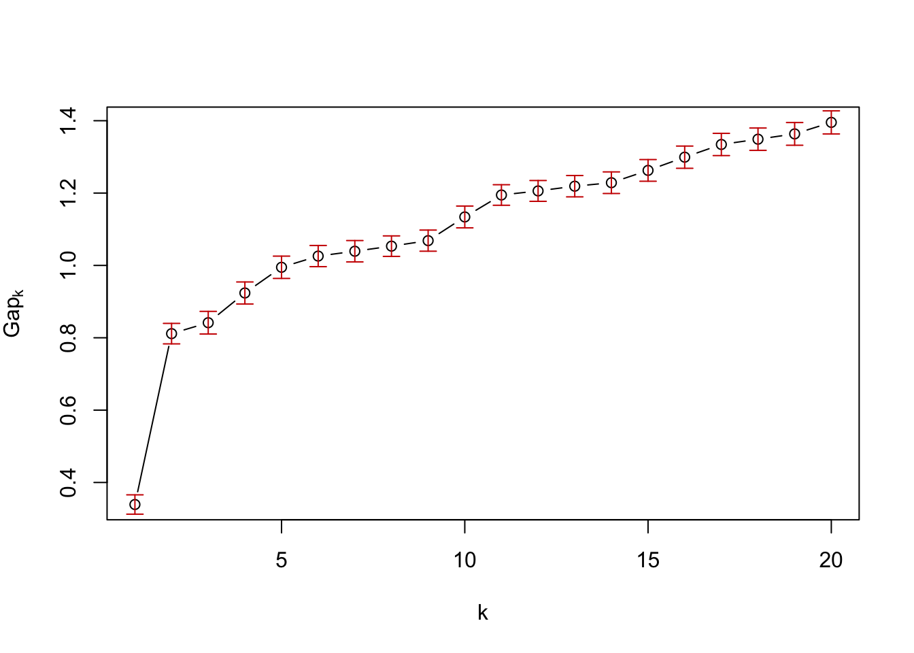
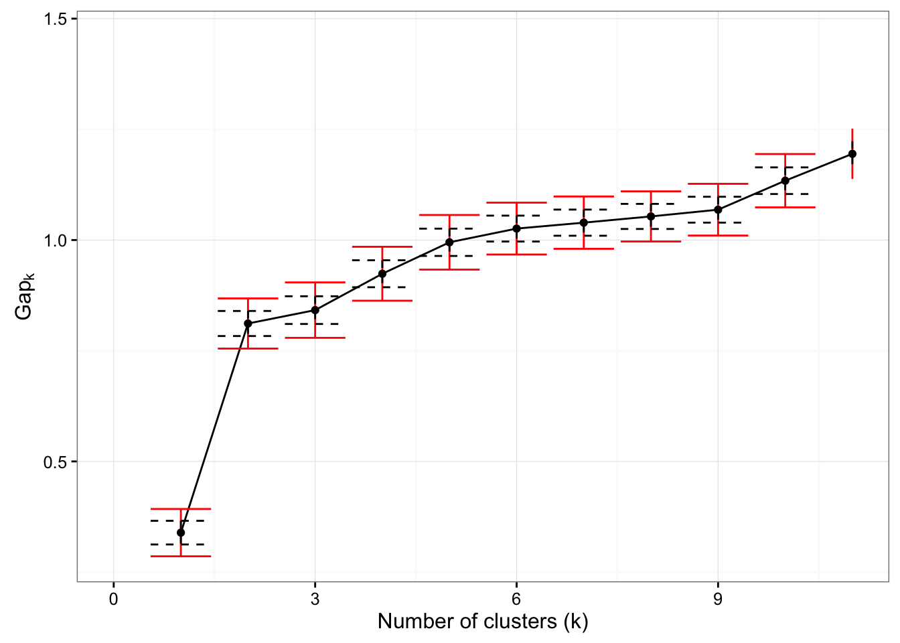

packageVersion("clusterSim")## [1] '0.44.2'packageVersion("cluster")## [1] '2.0.4'packageVersion("ROCR")## [1] '1.0.7'packageVersion("phyloseq")## [1] '1.16.2'packageVersion("ggplot2")## [1] '2.1.0'library(phyloseq)
load("STAT.RData")
normalizeSample = function(x){ x / sum(x)}
physeq.norm = transformSampleCounts(phy, normalizeSample)jsd.dist = phyloseq::distance(physeq.norm, "jsd")csin <- hclust(jsd.dist, method = "single")
ccom <- hclust(jsd.dist, method = "complete")
caver <- hclust(jsd.dist, method = "aver")par(mfrow=c(1,3))
plot(csin, hang=-1, main="single linkage")
plot(ccom, hang=-1, main="complete linkage")
plot(caver, hang=-1, main="average linkage")
# Example of how to select best discrete clusters from the dendrograms
par(mfrow=c(1,1))
plot(ccom, hang = -1)
dcl = rect.hclust(ccom, 3)
par(mfrow=c(1,3))
plot(jsd.dist, cophenetic(csin), asp = 1, main="single linkage")
abline(0,1, col='red', lty='dashed')
plot(jsd.dist, cophenetic(ccom), asp = 1, main="complete linkage")
abline(0,1, col='red', lty='dashed')
plot(jsd.dist, cophenetic(caver), asp = 1, main="average linkage")
abline(0,1, col='red', lty='dashed')
Cophenetic correlation is maximized by average linkage
cor(jsd.dist, cophenetic(csin))## [1] 0.659062cor(jsd.dist, cophenetic(ccom))## [1] 0.7639895cor(jsd.dist, cophenetic(caver))## [1] 0.8549823## Discrete clustering
library(cluster)
library(clusterSim)
cc = pam(jsd.dist, k=2, cluster.only=T)
table(sample_data(phy)$Treatment, cc)## cc
## 1 2
## C 10 10
## P 10 9
## T 10 9
## V 10 10
## VP 9 9table(sample_data(phy)$Location, cc)## cc
## 1 2
## cecal 49 1
## fecal 0 46cluster.tr = table(sample_data(phy)$Treatment, cc)
chisq.test(cluster.tr)##
## Pearson's Chi-squared test
##
## data: cluster.tr
## X-squared = 0.063624, df = 4, p-value = 0.9995cluster.loc = table(sample_data(phy)$Location, cc)
cluster.loc## cc
## 1 2
## cecal 49 1
## fecal 0 46chisq.test(cluster.loc)##
## Pearson's Chi-squared test with Yates' continuity correction
##
## data: cluster.loc
## X-squared = 88.198, df = 1, p-value < 2.2e-16pam1 <- function(x,k) list(cluster = pam(as.dist(x),k, cluster.only=TRUE))
gsPam1 <- clusGap(as.matrix(jsd.dist), FUN = pam1, K.max = 20, B = 100)## Clustering k = 1,2,..., K.max (= 20): .. done
## Bootstrapping, b = 1,2,..., B (= 100) [one "." per sample]:
## .................................................. 50
## .................................................. 100par(mfrow=c(1,1))
plot(gsPam1)
a slightly nicer way to visualize Gap statistic analysis
library(ggplot2)
m = ggplot(as.data.frame(gsPam1$Tab), aes(y=gap, x=1:20))
m + theme_bw() +
geom_line() +
geom_errorbar(aes(ymin=gap-2*SE.sim, ymax=gap+2*SE.sim), colour="red") +
geom_errorbar(aes(ymin=gap-SE.sim,
ymax=gap + SE.sim),
colour="black", linetype="dashed") +
ylab(expression(paste("Ga",p[k]))) +
geom_point() +
xlab("Number of clusters (k)") +
xlim(0,11)## Warning: Removed 9 rows containing missing values (geom_path).## Warning: Removed 9 rows containing missing values (geom_errorbar).
## Warning: Removed 9 rows containing missing values (geom_errorbar).## Warning: Removed 9 rows containing missing values (geom_point).
source('CV_protocols.R')phylum = tax_glom(physeq.norm, taxrank = "Phylum")response = sample_data(phylum)$Location
predictors = as.matrix(t(otu_table(phylum)))Location.rf.100repCV =
sapply(1:100,
function(i)
mean(rf.kfoldAUC(predictors,
response,
k=6)$aucs))Location.svm.100repCV =
sapply(1:100,
function(i)
mean(svm.kfoldAUC(predictors,
response,
k=6)$aucs))
print('Location')## [1] "Location"Compare
rbind(RandomForest = c(mean(Location.rf.100repCV),
quantile(Location.rf.100repCV,
prob=c(0.05, 1))),
SVM = c(mean(Location.svm.100repCV),
quantile(Location.svm.100repCV, prob=c(0.05, 1))))## 5% 100%
## RandomForest 0.9998690 0.9998698 1
## SVM 0.9950537 0.9895792 1predictors = as.matrix(t(otu_table(
subset_samples(phylum,
Location=='fecal'))))
resp = sample_data(
subset_samples(phylum,
Location=='fecal'))$Treatment
response = rep('Atibiotic', length(resp))
response[resp == 'C'] = 'Control'
response = factor(response)
response## [1] Control Control Control Control Control Control Control
## [8] Control Control Control Atibiotic Atibiotic Atibiotic Atibiotic
## [15] Atibiotic Atibiotic Atibiotic Atibiotic Atibiotic Atibiotic Atibiotic
## [22] Atibiotic Atibiotic Atibiotic Atibiotic Atibiotic Atibiotic Atibiotic
## [29] Atibiotic Atibiotic Atibiotic Atibiotic Atibiotic Atibiotic Atibiotic
## [36] Atibiotic Atibiotic Atibiotic Atibiotic Atibiotic Atibiotic Atibiotic
## [43] Atibiotic Atibiotic Atibiotic Atibiotic
## Levels: Atibiotic ControlTreatmentf.rf.100repCV =
sapply(1:100,
function(i)
mean(rf.kfoldAUC(predictors,
response, k=6)$aucs))
Treatmentf.svm.100repCV =
sapply(1:100,
function(i)
mean(svm.kfoldAUC(predictors,
response, k=6)$aucs))
print('Treatment in fecal')## [1] "Treatment in fecal"rbind(RandomForest = c(mean(Treatmentf.rf.100repCV),
quantile(Treatmentf.rf.100repCV,
prob=c(0.05, 1))),
SVM = c(mean(Treatmentf.svm.100repCV),
quantile(Treatmentf.svm.100repCV,
prob=c(0.05, 1))))## 5% 100%
## RandomForest 0.7343056 0.6527778 0.8611111
## SVM 0.8234722 0.7222222 0.9583333predictors = as.matrix(t(
otu_table(subset_samples(phylum,
Location=='cecal'))))
resp = sample_data(
subset_samples(phylum,
Location=='cecal'))$Treatment
response = rep('Atibiotic', length(resp))
response[resp == 'C'] = 'Control'
response = factor(response)
Treatmentc.rf.100repCV =
sapply(1:100,
function(i)
mean(rf.kfoldAUC(predictors,
response, k=6)$aucs))
Treatmentc.svm.100repCV =
sapply(1:100,
function(i)
mean(svm.kfoldAUC(predictors,
response, k=6)$aucs))
print('Treatment in cecal')## [1] "Treatment in cecal"rbind(RandomForests = c(mean(Treatmentc.rf.100repCV),
quantile(Treatmentc.rf.100repCV,
prob=c(0.05, 1))),
SVM = c(mean(Treatmentc.svm.100repCV),
quantile(Treatmentc.svm.100repCV,
prob=c(0.05, 1))))## 5% 100%
## RandomForests 0.7075893 0.6028770 0.8293651
## SVM 0.8253373 0.7378968 0.9146825caret: Classification and Regression Tools
Alternatively, you can run these exact same methods and CV testing design using the caret package, which provides a convenient unified interface to a large number of statistical/machine learning methods in R.
library("caret")
# install.packages("pROC")
library("pROC")caret supports a system-agnostic parallelization framework called “foreach”. You may have this already installed and available. If so, you can change the following runInParallel parameter to TRUE.
If you do set it to TRUE, one of the foreach helper pacakges, “doParallel”, will be loaded and the parallel “backend” will be defined. The code you use for your analysis does not change, other than perhaps the allowParallel option below.
runInParallel = FALSE
if(runInParallel){
library("doParallel")
registerDoParallel(cl = parallel::detectCores() - 1L)
}Define how you want cross-validation to be performed. This is separate from the step where you define the input data and method to use.
fitControl <- trainControl(## 10-fold CV
method = "repeatedcv",
number = 10,
classProbs = TRUE,
## repeated ten times
repeats = 10,
summaryFunction = twoClassSummary,
allowParallel = runInParallel)# Run Training. SVM
fit1svmL <- caret::train(x = predictors,
y = as.character(response),
method = "svmLinear",
metric = "ROC",
trControl = fitControl,
verbose = FALSE)# Run Training. SVM
fit1rf <- caret::train(x = predictors,
y = response,
metric = "ROC",
method = "rf",
trControl = fitControl,
verbose = FALSE)# SVM results summary
fit1svmL## Support Vector Machines with Linear Kernel
##
## 50 samples
## 7 predictor
## 2 classes: 'Atibiotic', 'Control'
##
## No pre-processing
## Resampling: Cross-Validated (10 fold, repeated 10 times)
## Summary of sample sizes: 45, 45, 45, 45, 45, 45, ...
## Resampling results:
##
## ROC Sens Spec
## 0.6 0.98 0
##
## Tuning parameter 'C' was held constant at a value of 1
## # RF results summary
fit1rf## Random Forest
##
## 50 samples
## 7 predictor
## 2 classes: 'Atibiotic', 'Control'
##
## No pre-processing
## Resampling: Cross-Validated (10 fold, repeated 10 times)
## Summary of sample sizes: 45, 45, 45, 45, 45, 45, ...
## Resampling results across tuning parameters:
##
## mtry ROC Sens Spec
## 2 0.69375 0.9375 0.25
## 4 0.71875 0.8975 0.40
## 7 0.73500 0.8825 0.46
##
## ROC was used to select the optimal model using the largest value.
## The final value used for the model was mtry = 7.caret package supports methods to address class imbalance within the CV framework via the sampling parameter in the trainControl() definition function.
See the sampling help page for more details.
fitControl2 <- trainControl(
## 5-fold CV
method = "repeatedcv",
number = 5,
classProbs = TRUE,
## repeated ten times
repeats = 10,
summaryFunction = twoClassSummary,
allowParallel = runInParallel,
sampling = "up")# Run Training. SVM
fit2svmL <- caret::train(x = predictors,
y = response,
method = "svmLinear",
metric = "ROC",
trControl = fitControl2,
verbose = FALSE)
# RF
fit2rf <- caret::train(x = predictors,
y = response,
method = "rf",
metric = "ROC",
trControl = fitControl2,
verbose = FALSE)Compare (again)
fit2svmL## Support Vector Machines with Linear Kernel
##
## 50 samples
## 7 predictor
## 2 classes: 'Atibiotic', 'Control'
##
## No pre-processing
## Resampling: Cross-Validated (5 fold, repeated 10 times)
## Summary of sample sizes: 40, 40, 40, 40, 40, 40, ...
## Addtional sampling using up-sampling
##
## Resampling results:
##
## ROC Sens Spec
## 0.715 0.755 0.64
##
## Tuning parameter 'C' was held constant at a value of 1
## fit2rf## Random Forest
##
## 50 samples
## 7 predictor
## 2 classes: 'Atibiotic', 'Control'
##
## No pre-processing
## Resampling: Cross-Validated (5 fold, repeated 10 times)
## Summary of sample sizes: 40, 40, 40, 40, 40, 40, ...
## Addtional sampling using up-sampling
##
## Resampling results across tuning parameters:
##
## mtry ROC Sens Spec
## 2 0.661875 0.89 0.43
## 4 0.681875 0.87 0.47
## 7 0.675000 0.84 0.48
##
## ROC was used to select the optimal model using the largest value.
## The final value used for the model was mtry = 4.